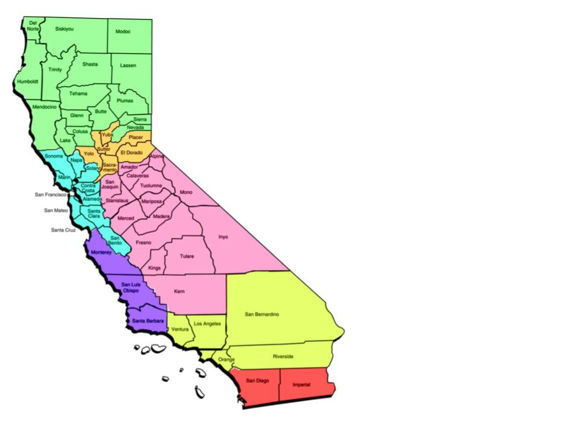

Department of Resources Recycling and Recovery is developing a safe and cost efficient way to dispose of hazardous materials, such as needles used to adminsiter drugs
Click on your region for locations near you

Drug Hotlines
These hotlines are constantly open, and are ready to help any anonymous drug user.